photos
Every photograph in this edition, with its photographer and licence. Archive photographs are marked as archive, with their year.
 Who was Yasser Arafat?Archive: honour guards at the Yasser Arafat mausoleum in Ramallah, January 2015.Travel 2 Palestine / Wikimedia Commons · CC BY 2.0
Who was Yasser Arafat?Archive: honour guards at the Yasser Arafat mausoleum in Ramallah, January 2015.Travel 2 Palestine / Wikimedia Commons · CC BY 2.0 Red Crescent: infections rising after Gaza floodsArchive: patients are moved from Al-Aqsa Martyrs Hospital in Deir al-Balah, August 2024.Ashraf Amra, UNRWA / Wikimedia Commons · CC BY-SA 3.0 IGO
Red Crescent: infections rising after Gaza floodsArchive: patients are moved from Al-Aqsa Martyrs Hospital in Deir al-Balah, August 2024.Ashraf Amra, UNRWA / Wikimedia Commons · CC BY-SA 3.0 IGO More than 100 vehicles burned in village south of NablusArchive: houses in al-Lubban ash-Sharqiya, south of Nablus, June 2022.أمين (Ameen) / Wikimedia Commons · CC BY-SA 4.0
More than 100 vehicles burned in village south of NablusArchive: houses in al-Lubban ash-Sharqiya, south of Nablus, June 2022.أمين (Ameen) / Wikimedia Commons · CC BY-SA 4.0 London Palestine Film Festival opens at the BarbicanArchive: the Barbican Centre in the City of London, January 2009.Ewan-M / Wikimedia Commons · CC BY-SA 2.0
London Palestine Film Festival opens at the BarbicanArchive: the Barbican Centre in the City of London, January 2009.Ewan-M / Wikimedia Commons · CC BY-SA 2.0 Qalqilya protests plan to close UNRWA hospitalArchive: the city of Qalqilya seen from a distance, July 2024.Ærøzz / Wikimedia Commons · CC0
Qalqilya protests plan to close UNRWA hospitalArchive: the city of Qalqilya seen from a distance, July 2024.Ærøzz / Wikimedia Commons · CC0 Two Old City youth institutions closed in five daysArchive: Burj al-Laqlaq, the Stork Tower, at the north-eastern corner of Jerusalem's Old City wall, April 2011.Mujaddara / Wikimedia Commons · CC BY-SA 3.0
Two Old City youth institutions closed in five daysArchive: Burj al-Laqlaq, the Stork Tower, at the north-eastern corner of Jerusalem's Old City wall, April 2011.Mujaddara / Wikimedia Commons · CC BY-SA 3.0 Why are 150,000 tents still waiting outside Gaza?Archive: a baled family tent marked UNICEF and UK aid after delivery to Gaza, 1 December 2025.Foreign, Commonwealth & Development Office / Wikimedia Commons · CC BY 4.0
Why are 150,000 tents still waiting outside Gaza?Archive: a baled family tent marked UNICEF and UK aid after delivery to Gaza, 1 December 2025.Foreign, Commonwealth & Development Office / Wikimedia Commons · CC BY 4.0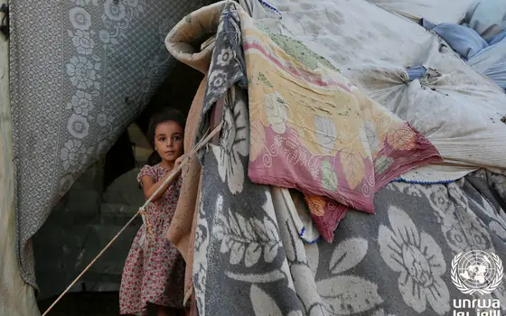
Sand cliff collapse kills five in Deir al-Balah campArchive: a displaced girl outside her family's tent in Deir al-Balah, August 2024.Ashraf Amra, UNRWA / Wikimedia Commons · CC BY-SA 3.0 IGO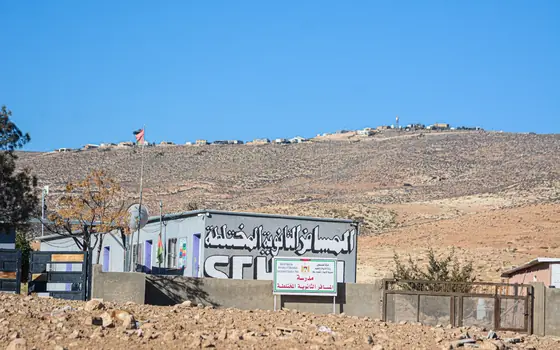
Masafer Yatta: teachers detained, school raidedArchive: the school in Al-Fakhit village, Masafer Yatta, 2025.Palestine Bal / Wikimedia Commons · CC BY 4.0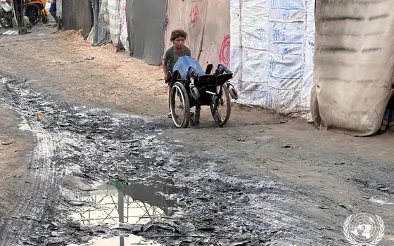
First winter storm swamps Gaza's displacement sitesArchive: standing sewage water beside the tents of displaced families in Deir al-Balah, August 2024. Not from this week's storm.Ashraf Amra, UNRWA / Wikimedia Commons · CC BY-SA 3.0 IGOFive solidarity actions, from Stockholm to New JerseyArchive: a demonstration in support of Palestine at Sergels torg, Stockholm, 14 October 2023. Not the November 2026 rally at Odenplan.Frankie Fouganthin / Wikimedia Commons · CC BY 4.0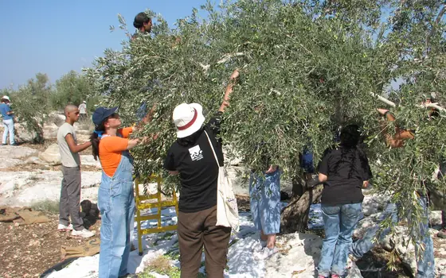
Olive harvest in numbers: a record 377 settler attacksArchive: Palestinian and Israeli volunteers harvest olives together in Qaffin, northern West Bank, October 2008.Orrling / Wikimedia Commons · CC BY-SA 3.0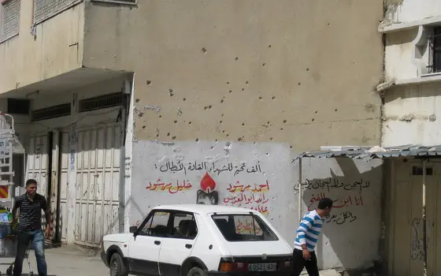
What is UNRWA, and why is it cutting services?Archive: a street in Balata refugee camp, Nablus, April 2011.Alt-x / Wikimedia Commons · CC BY 2.0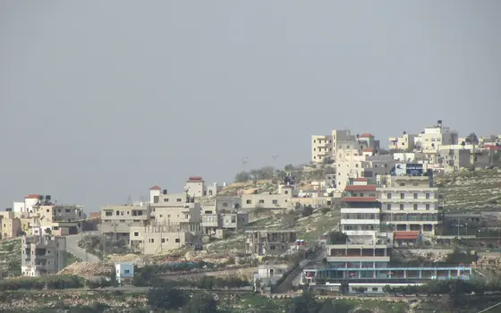
Israel to deport 12 olive-harvest volunteersArchive: the village of Kafr Ni'ma, west of Ramallah, seen from the east in February 2019.יעקב (Yaakov) / Wikimedia Commons · CC BY-SA 4.0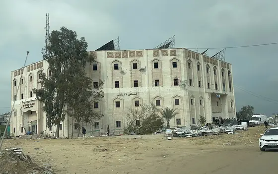
Why do Gaza doctors want a birth-defects inquiry?Archive: the damaged Indonesian Hospital in northern Gaza, February 2025.Jaber Jehad Badwan / Wikimedia Commons · CC BY-SA 4.0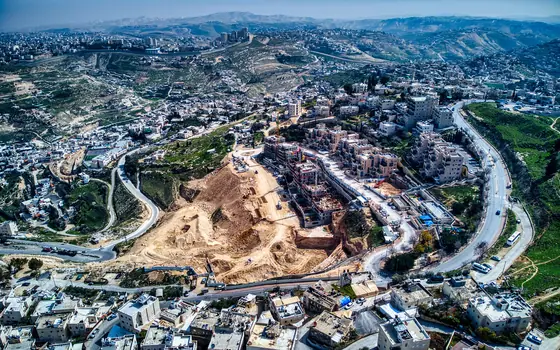
Six Jerusalem demolitions in a fortnight, case by caseArchive: the Jabal al-Mukabber neighbourhood of East Jerusalem, March 2022.Hagai Agmon-Snir / Wikimedia Commons · CC BY-SA 4.0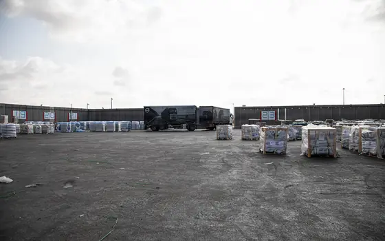
How does aid get into Gaza now?Archive: an aid truck leaves after offloading at the Kerem Shalom crossing, 13 November 2025.Sgt. 1st Class Malcolm Cohens-Ashley, U.S. Army / Wikimedia Commons · Public domain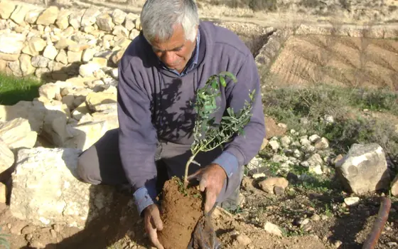
760 environmental violations logged in West Bank this yearArchive: a farmer plants an olive sapling in Beit Ummar, north of Hebron, January 2010.Palestine Solidarity Project / Wikimedia Commons · CC BY-SA 2.0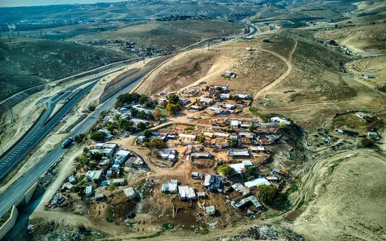
What is the E1 plan east of Jerusalem?Archive: Khan al-Ahmar, a Bedouin community in the same area east of Jerusalem, January 2025. Bir al-Maskub itself is not pictured.Hagai Agmon-Snir / Wikimedia Commons · CC BY-SA 4.0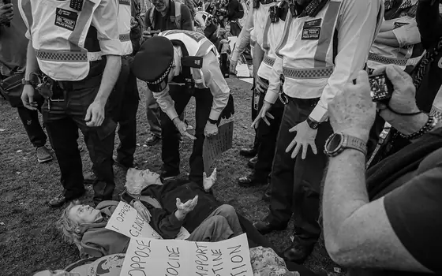
Why is the UK's top court reviewing the Palestine Action ban?Archive: a sit-in in support of Palestine Action in Parliament Square, London, 6 September 2025.Alisdare Hickson / Wikimedia Commons · CC BY-SA 4.0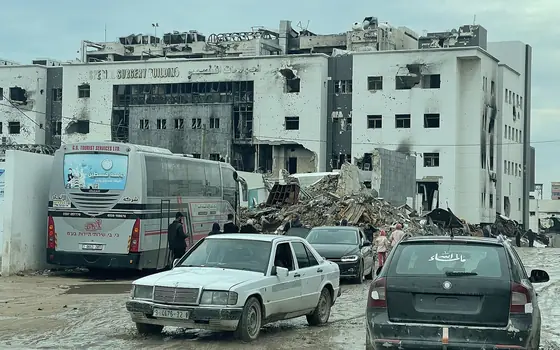
Courts refuse to free 14 detained Gaza doctorsArchive: Al-Shifa Hospital in Gaza City, February 2025.Jaber Jehad Badwan / Wikimedia Commons · CC BY-SA 4.0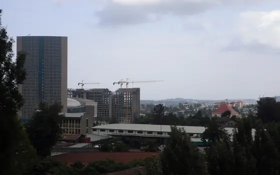
AU, OIC and Arab League issue joint call on PalestineArchive: the African Union conference centre and headquarters in Addis Ababa, July 2012.Elmschrat Coaching-Blog / Wikimedia Commons · CC BY-SA 3.0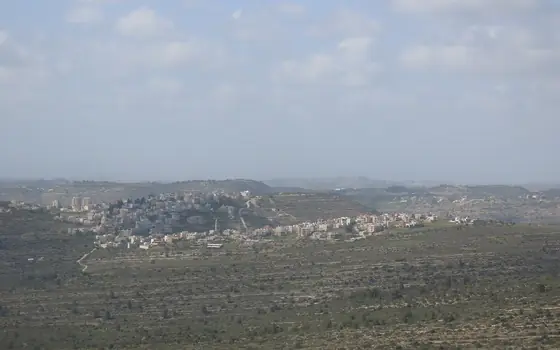
2,536 dunums near Ramallah declared 'state property'Archive: the village of Beitillu, north-west of Ramallah, photographed from a nearby hilltop in April 2026.יעקב (Yaakov) / Wikimedia Commons · CC0 From cart driver back to pupil at 12Archive: displaced children play inside an UNRWA school used as a shelter in Jabalia camp, February 2024. Not the child in this story.Abedallah Alhaj, UNRWA / Wikimedia Commons · CC BY-SA 3.0 IGO
From cart driver back to pupil at 12Archive: displaced children play inside an UNRWA school used as a shelter in Jabalia camp, February 2024. Not the child in this story.Abedallah Alhaj, UNRWA / Wikimedia Commons · CC BY-SA 3.0 IGO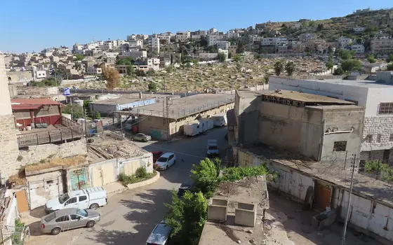
What happened in Hebron's ten-day lockdown?Archive: view over part of Hebron's Old City, May 2022. The neighbourhoods sealed in October lie elsewhere in the city.Fallaner / Wikimedia Commons · CC BY-SA 4.0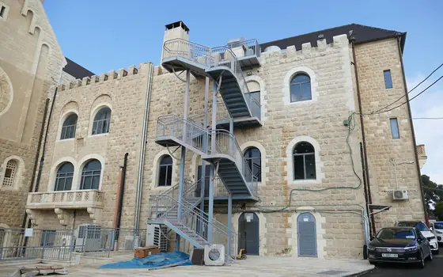
Greece gives €600,000 to East Jerusalem hospitalsArchive: the Augusta Victoria Hospital compound on the Mount of Olives, East Jerusalem, January 2025.Bukvoed / Wikimedia Commons · CC BY 4.0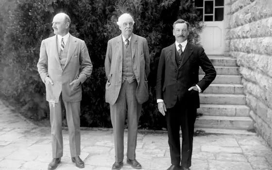
What was the Balfour Declaration?Archive: Lord Allenby, Lord Balfour and Sir Herbert Samuel during Balfour's visit to Jerusalem, 1 April 1925.American Colony Photo Department, Library of Congress / Wikimedia Commons · Public domain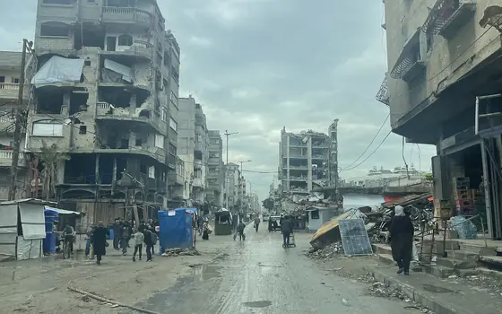
What is Gaza's 'yellow line'?Archive: a street in central Gaza City lined with destroyed buildings, February 2025.Jaber Jehad Badwan / Wikimedia Commons · CC BY-SA 4.0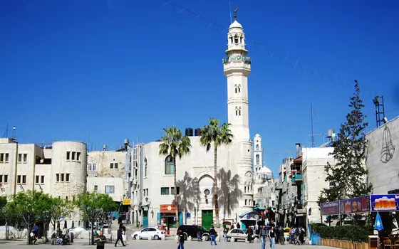
Bethlehem pupil is runner-up in Arab Reading ChallengeArchive: Manger Square and the Mosque of Omar in central Bethlehem, April 2012.Dickelbers / Wikimedia Commons · CC BY-SA 3.0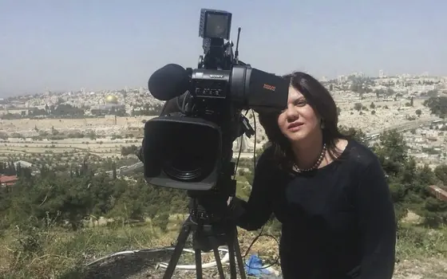
What does the UN report on Palestinian journalists say?Archive: Shireen Abu Akleh, the Al Jazeera correspondent killed in Jenin in May 2022, in an undated photograph released by the network.Al Jazeera Media Network / Wikimedia Commons · CC BY-SA 4.0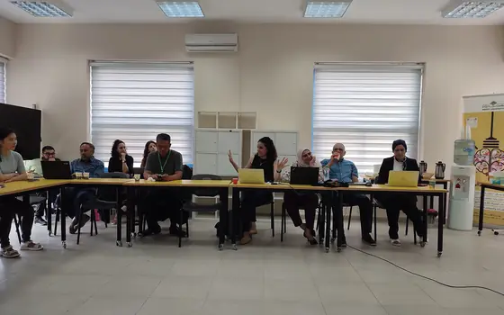
Israel bars 23-member delegation from Birzeit conferenceArchive: a lecture for a visiting foreign delegation at Birzeit University, June 2023.Tomasz Przechlewski / Wikimedia Commons · CC BY 2.0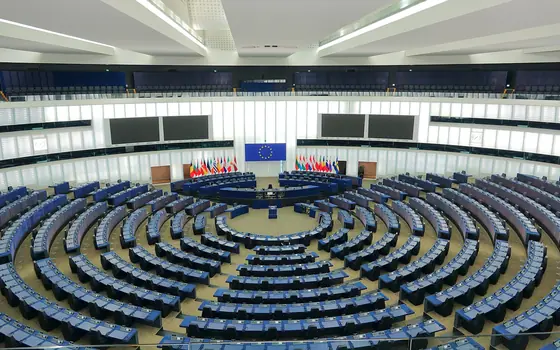
60 MEPs press EU for sanctions over Hebron closureArchive: the European Parliament's chamber in Strasbourg, June 2021.Gzen92 / Wikimedia Commons · CC BY-SA 4.0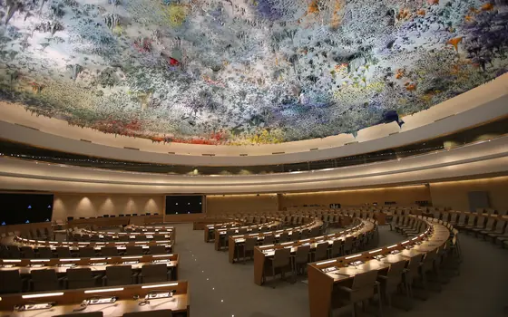
What did the UN inquiry's October report find?Archive: the Human Rights and Alliance of Civilizations Room at the UN in Geneva, where the Human Rights Council meets, August 2015.Ludovic Courtès / Wikimedia Commons · CC BY-SA 3.0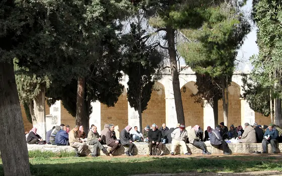
Ben-Gvir at Al-Aqsa on election eve; Egypt, Qatar protestArchive: worshippers in the south-western courtyard of the Al-Aqsa Mosque compound, March 2010.Gerd Eichmann / Wikimedia Commons · CC BY-SA 4.0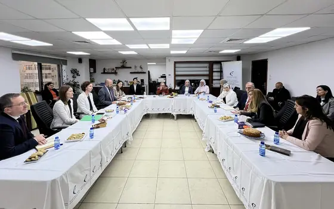
Palestinian Women's Day, in seven numbersArchive: Palestinian women who run businesses and cooperatives meet a visiting British minister in Ramallah, 3 December 2024.Foreign, Commonwealth & Development Office / Wikimedia Commons · CC BY 2.0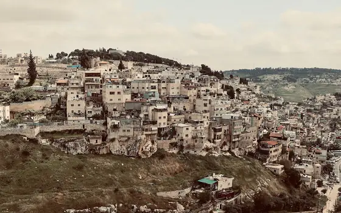
Governorate: tunnels under Silwan are cracking homesArchive: houses of Silwan seen from across the Kidron Valley, April 2023.MMO:VAS Monoliths / Wikimedia Commons · CC0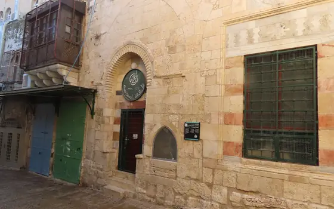
New book traces the history of Palestinian librariesArchive: the Khalidi Library, a Palestinian family library founded in Jerusalem's Old City in 1900, photographed in December 2025. It is shown as an example and is not the subject of the book.יעקב (Yaakov) / Wikimedia Commons · CC0Palestinian kickboxers win eight medals in TashkentArchive: a kickboxing world title bout in Rödental, Germany, November 2011. It shows the sport, not the Palestinian team or the Tashkent event.Claus Michelfelder / Wikimedia Commons · CC BY-SA 3.0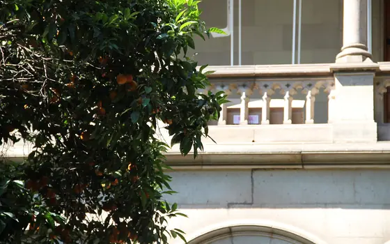
Barcelona launches Spain's first Palestine studies chairArchive: a courtyard garden in the University of Barcelona's historic building, July 2011.Léna / Wikimedia Commons · CC BY 3.0


.jpg){kind=link}


.jpg){kind=link}
.jpg){kind=link}


_P168_Hebron_Old_City.jpg){kind=link}


.jpg){kind=link}

.jpg){kind=link}


.jpg){kind=link}